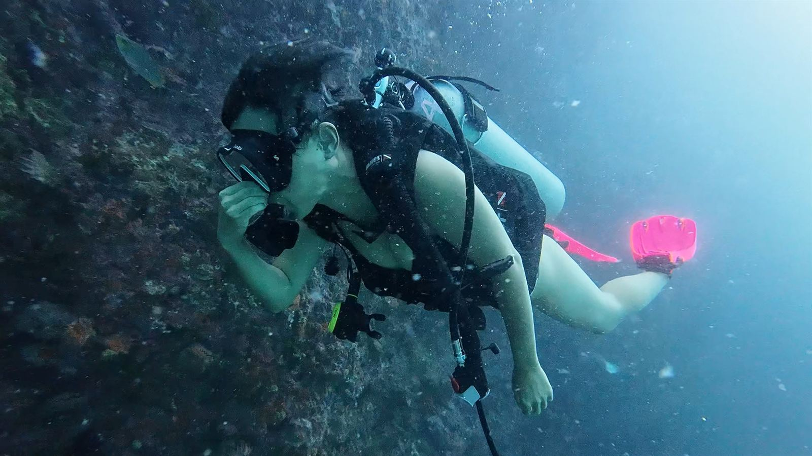
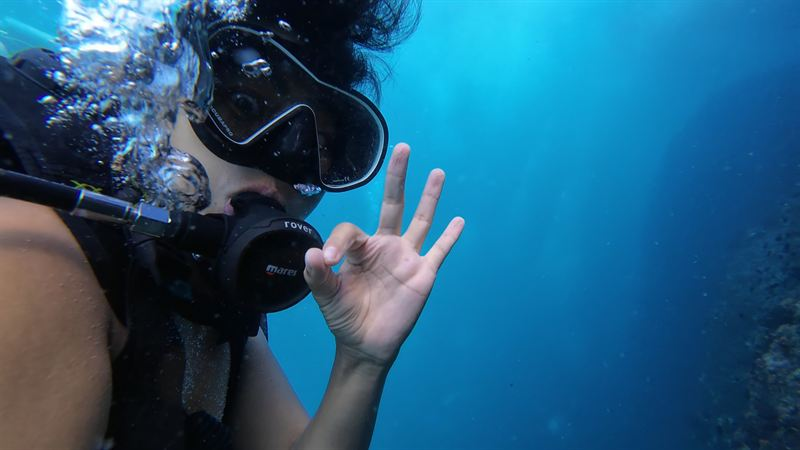
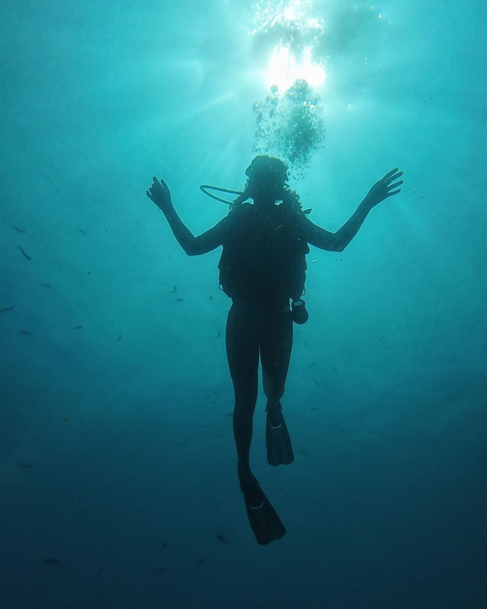
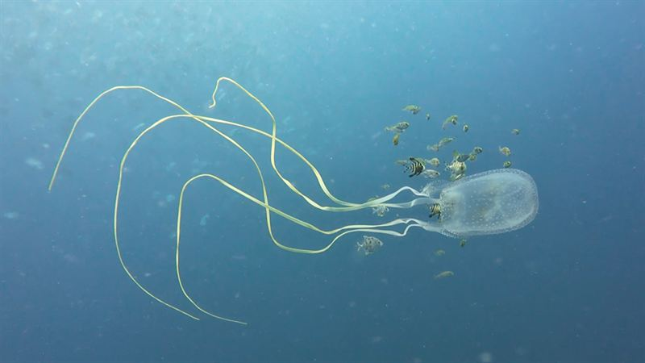
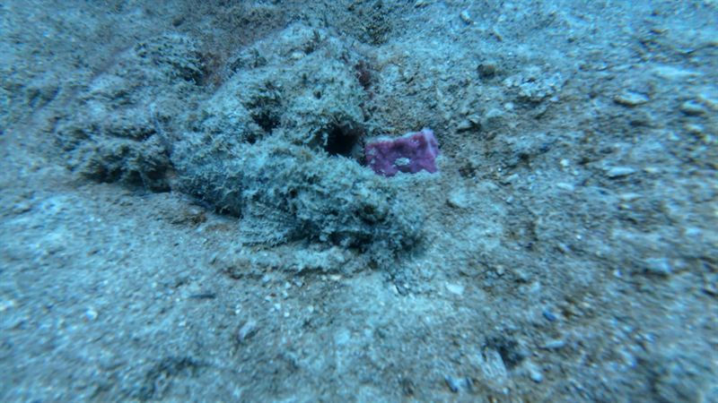

Ein einzelner Nullzeittauchgang
Warte mindestens 12 Stunden vor dem Fliegen.
Bis Weihnachten fahren wir um 8:00 ab: Treffpunkt am Pier von Chaloklum um 7:45, zurück gegen 13:30–14:00.Warum?

Start / Gesundheit und Sicherheit
Die Fragen, die uns jede Woche auf dem Boot gestellt werden: Wann darf ich fliegen, kann ich mit Erkältung tauchen, ist Diabetes ein Problem, wie fühlt sich die Dekompressionskrankheit an? Hier sind klare Antworten, basierend auf den Empfehlungen von Divers Alert Network (DAN).

Sich gut fühlen ist die erste Regel
Vor dem Tauchen
Jeder Taucher füllt einen kurzen medizinischen Fragebogen aus. Beantworte ihn ehrlich: Bei manchen Erkrankungen braucht es vor dem Tauchen nur die Unterschrift eines Arztes, und das weiß man besser, bevor das Boot ablegt.
Fliegen nach dem Tauchen
Nach dem Tauchen hat dein Körper noch zusätzlichen Stickstoff gespeichert, und der niedrigere Druck in der Flugzeugkabine kann daraus eine Dekompressionskrankheit machen. DAN empfiehlt diese Mindestzeiten an der Oberfläche — länger ist immer besser.
Warte mindestens 12 Stunden vor dem Fliegen.
Warte mindestens 18 Stunden. Das gilt für einen normalen Tag mit zwei Tauchgängen und für jeden Kurs.
Warte mindestens 24 Stunden.
Die Fähre ist kein Problem: Du bist gegen 15:30 zurück am Pier von Chaloklum, rechtzeitig für eine Fähre um 17:00. Plane nur deinen letzten Tauchtag passend zu deinem Flug ab Koh Samui, Surat Thani oder Bangkok.
Alkohol und Tauchen
Alkohol verlangsamt deine Reaktionen, trübt dein Urteilsvermögen und entzieht dir Wasser, und seine Wirkung hält länger an, als die meisten denken. Divers Alert Network (DAN) sagt es einfach: Alkohol und Tauchen passen nicht zusammen.
Bevor
Am Tauchtag
Danach
Gehört die Full Moon Party zu deiner Reise? Am einfachsten tauchst du in den Tagen davor, nicht am Morgen danach.
Tauchen mit Erkältung
Um entspannt zu tauchen, musst du den Druck in den Lufträumen deiner Ohren und Nebenhöhlen ausgleichen. DAN erklärt, dass Erkältungen und Allergien die Nasenschleimhaut anschwellen lassen und die engen Durchgänge blockieren können, durch die die Luft muss. Die sicherste Wahl ist, zu warten, bis die Erkältung abgeklungen ist.
Das Risiko
Abschwellende Mittel
Zurück ins Wasser

Langsame Aufstiege, Sicherheitsstopps
Dekompressionskrankheit
Die Dekompressionskrankheit (DCS) ist beim Sporttauchen selten, und langsame Aufstiege, Sicherheitsstopps und das Einhalten der Grenzen deines Computers machen sie noch seltener. Aber jeder Taucher sollte sie erkennen, denn frühe Sauerstoffgabe und Behandlung machen einen echten Unterschied.
Wenn du nach dem Tauchen eines davon bemerkst, flieg nicht und warte nicht ab, ob es vorbeigeht: Sag uns Bescheid, hol sofort medizinische Hilfe und ruf die 24-Stunden-Notrufnummer von DAN an: +1 919 684 9111.
Tauchen mit Diabetes
Viele Menschen mit Diabetes tauchen sicher. Die Empfehlungen von DAN legen fest, wer tauchen kann und wie man den Blutzucker an einem Tauchtag steuert. Sprich mit deinem Arzt und sag uns und deinem Buddy vor dem Tauchgang Bescheid.
Wer tauchen kann
Am Tauchtag
Vermeiden
Wenn du während eines Tauchgangs Symptome spürst, gib deinem Buddy ein Zeichen, beende den Tauchgang, tauche auf und lass dich untersuchen.
Schauen, nicht anfassen
Fast nichts im Golf von Thailand ist gefährlich, wenn du deine Hände bei dir und deine Flossen vom Grund fernhältst. Ein paar Tiere verdienen besonderen Respekt.

Ihre Stiche sind sehr schmerzhaft und können gefährlich sein. Nach einem Stich raus aus dem Wasser, die Stelle mindestens 30 Sekunden mit Essig übergießen, nicht reiben und medizinische Hilfe holen.

Meister der Tarnung mit giftigen Stacheln. Setz nie eine Hand oder ein Knie ab, ohne hinzusehen. Ein Stich braucht heißes Wasser — so heiß, wie du es aushältst — und einen Arzt.
Überall
Seeigelstacheln, Feuerkorallen und manche Anemonen nesseln oder schneiden. Gute Tarierung ist der beste Schutz — für dich und für das Riff.
Fragen
DAN empfiehlt mindestens 12 Stunden nach einem einzelnen Nullzeittauchgang, 18 Stunden nach Wiederholungstauchgängen oder mehreren Tauchtagen und 24 Stunden nach einem Dekompressionstauchgang. Für einen normalen Tag mit zwei Tauchgängen oder einen Kurs plane 18 Stunden ein.
Besser nicht. Eine verstopfte Nase oder Nebenhöhlen machen den Druckausgleich schwer oder unmöglich, was deine Ohren schädigen kann. Abschwellende Mittel können während des Tauchgangs nachlassen. Warte, bis du frei durch die Nase atmen kannst.
Das ist riskant. Lässt ein abschwellendes Mittel während des Tauchgangs nach, kann die in Nebenhöhlen oder Ohren eingeschlossene Luft beim Aufstieg nicht entweichen: ein schmerzhafter Reverse Block. DAN warnt außerdem, dass häufiger Gebrauch kurz wirkender Nasensprays zu einer Rebound-Schwellung führen kann. Sicherer ist es, zu warten, bis die Erkältung abgeklungen ist.
Oft ja. Nach den Empfehlungen von DAN dürfen Erwachsene mit gut eingestelltem Diabetes tauchen, mit sorgfältigen Blutzuckermessungen vor und nach jedem Tauchgang und einigen Grenzen bei Tiefe und Tauchzeit. Sprich mit deinem Arzt und sag uns vor der Buchung Bescheid.
Nach einer langen Nacht lieber nicht. Alkohol verlangsamt deine Reaktionen, seine Wirkung braucht Zeit, um nachzulassen, und der Flüssigkeitsmangel, den er verursacht, ist ein möglicher Risikofaktor für die Dekompressionskrankheit. Am sichersten ist es, dich auszuruhen, Wasser zu trinken und an einem anderen Tag zu tauchen.
Es gibt keine offizielle Stundenzahl. Alkohol braucht Zeit, um abgebaut zu werden, und DAN weist darauf hin, dass Taucher oft stärker beeinträchtigt sind, als sie sich fühlen. Vernünftig ist es, am Abend vorher nur wenig zu trinken und den Alkohol zu lassen, bis alle Tauchgänge des Tages vorbei sind.
Keine gute Idee. Ein Kater bedeutet Flüssigkeitsmangel, Kopfschmerzen und langsameres Denken, und seine Müdigkeit kann mit den ersten Anzeichen einer Dekompressionskrankheit verwechselt werden.
Leichte Anzeichen sind Gelenk- oder Muskelschmerzen, Hautausschlag oder Marmorierung und ungewöhnliche Müdigkeit. Schwere Anzeichen sind Taubheit, Kribbeln oder Schwäche, Schwierigkeiten beim Gehen, Verwirrtheit, Schwindel, Brustschmerzen oder Atemnot und Hörprobleme. Bei jedem davon: nicht fliegen, medizinische Hilfe holen und DAN anrufen.
Nein. Tauchen wird in keiner Phase der Schwangerschaft empfohlen. Du bist aber herzlich willkommen, stattdessen mit aufs Boot zu kommen und an Sail Rock zu schnorcheln.
Manchmal. Das hängt davon ab, wie gut es eingestellt ist und was es auslöst, deshalb muss ein Arzt dich untersuchen und vor dem Tauchen das medizinische Formular unterschreiben.
Diese Seite ist eine allgemeine Information, keine medizinische Beratung. Wenn du Zweifel an deiner Tauchtauglichkeit hast, frag einen Arzt mit Erfahrung in Tauchmedizin oder wende dich an DAN.
Quellen: Divers Alert Network (DAN), Drinking and diving: is it safe? (auf Englisch) · DAN, Ears and diving (auf Englisch) · DAN, Sinus barotrauma (auf Englisch) · DDRC Healthcare (britisches Zentrum für Tauchmedizin), Cold and flu (auf Englisch)
Schreib uns vor der Buchung auf WhatsApp. Wir sagen dir ehrlich, ob du vorher die Unterschrift eines Arztes brauchst.